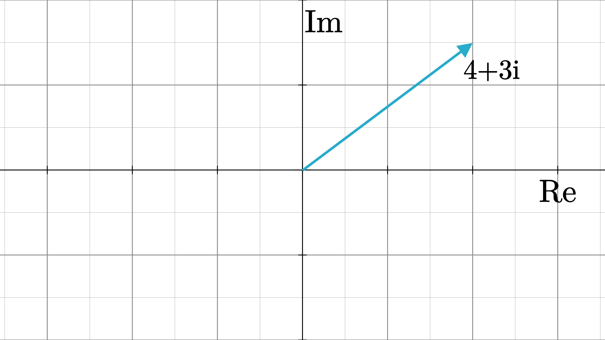

虚数的引出
让我们先来考虑以下这个方程：
\begin{eqnarray}
x^2 = 4 \notag
\end{eqnarray}
很直接，通过对方程两边开根，可以求得它的解为 $x=2$ 或 $x=-2$。
如果要更细致的探索这个方程的意义，我们可以将其改写为 $x·x·1=4$ ，它意味着我们需要求解出某种操作$x$，使其对实数 $1$ 作用两次后变为实数 $4$ 。如果利用几何的手段，将整个过程移到实轴上，那么根据之前的计算，这个变换最终就能直观的用以下两张图来表示：

但是如果我们需要求解以下这个方程呢？ \begin{eqnarray} x^2 = -1 \notag \end{eqnarray} 如果像刚刚那样，假想整个变换都发生在实轴上，那么我们大致能判断出这个未知变换应当长这样：

可是，从代数的角度来看，它却是极为不合理的。在第一步操作中，它直接把 $1$ 变成了 $0$ ，如果这仅仅意味着将 $0$ 乘以 $1$ ，那么在进行第二次变换过后，它应当仍然为 $0$ ，因为将一个实数乘以 $0$ 之后相当于直接清除这个数原本在实轴上留有的信息，我们不可能再次通过相同的变换将一个零维空间扩展到一维。但是很显然，这个亟待求解的变换在将 $x$ 变为 $0$ 后仍然保存了一定的信息，那么它究竟是什么呢？
说到维度，我们目前都仅仅将思维局限在了如之前图中所示的一维实轴上。但是如果我们假想这个变换是发生在一个二维平面内，那么如下图所示的这个操作便提供了一种可行的方案：

很显然，这个变换意味着将实数绕着原点逆时针旋转90度（顺时针旋转则为它的逆变换），在数学上，我们将这种变换定义为 $i$ （在工程学中， $j$ 这个符号更常用些）。至此，通过将视野拓展到二维平面，我们在数学上获得了一个强有力的分析工具——虚数 $i$ 。事实上，当我们站在一个更高的维度去分析低维的一些问题，这些分析工具不仅能够给我们提供一种全新的思路，在简化运算时往往也能起到意想不到的作用（比如说正弦稳态分析中的相量分析法和机器人学中的齐次坐标）。
从实数到复数
既然已经定义了虚数 $i$ ，那我们就可以将分析对象从目前的实数域扩展到整个复数域。通常情况下，我们将形如$z=a+bi$ （$a$，$b$ 必须为实数）的数称为复数（complex number），其中 $a$ 为实部（real part）， $b$ 为虚部（imaginary part）。而在几何上，我们也可以将分析范围从实轴拓展到整个复平面，比如说，复数 $4+3i$ 在复平面中就可以这样表示：

从代数的角度看，复数的运算法则和实数一致，这里就列在下方，不做过多赘述。
\begin{eqnarray}
(a_1 + ib_1) + (a_2 + ib_2)&=(a_1 + a_2) + i(b_1 + b_2) \notag \\ \notag \\
(a_1 + ib_1) - (a_2 + ib_2)&=(a_1 - a_2) + i(b_1 - b_2) \notag \\ \notag \\
(a_1 + ib_1) \cdot (a_2 + ib_2)&=(a_1a_2-b_1b_2) + i(a_1b_2+a_2b_1) \notag \\ \notag \\
\frac{a_1 + ib_1}{a_2 + ib_2}&=\frac{(a_1a_2+b_1b_2) + i(a_2b_1-a_1b_2)}{a_2^2 + b_2^2} \notag
\end{eqnarray}
复数的极坐标形式
对于直角坐标形式下的复数 $z=a+bi$，如果我们假设 $a=rcos\theta$，$b=rsin\theta$ （其中 $r=|z|=\sqrt{a^2+b^2}$ ，$tan\theta=\frac{b}{a}$ ），那么将其改写成 $z=r(cos\theta + i\cdot sin\theta)$ 后的表达式就为复数的极坐标形式（如果套用欧拉公式，那就是 $z=re^{i\theta}$）。
如果在极坐标形式下,如果假设 $z_1 = r_1(cos\theta_1 + i\cdot sin\theta_1)$，$z_2 = r_2(cos\theta_2 + i\cdot sin\theta_2)$ ，那么当对两个复数进行乘法操作时，结果如下所示：
\begin{eqnarray}
z_1z_2 &= r_1(cos\theta_1 + i\cdot sin\theta_1) \cdot r_2(cos\theta_2 + i\cdot sin\theta_2) \notag
\end{eqnarray}
\begin{eqnarray}
= r_1r_2[cos(\theta_1+\theta2) + i \cdot sin(\theta_1+\theta2) ]\notag
\end{eqnarray}
也就是说，这个乘法运算相当于是对 $z_2$ 同时进行了拉伸 $r_1$ 倍和旋转 $\theta_1$ $rad$ 这两种操作。我们也完全可以用一个缩放矩阵 $\textbf{S}_1 = \begin{bmatrix}
r_1 & 0 \\ 0 & r_1\end{bmatrix}$和旋转矩阵 $\textbf{R}_1 = \begin{bmatrix}
cos\theta_1 & -sin\theta_1 \\ sin\theta_1 & cos\theta_1\end{bmatrix}$来描述这种变换（抱歉，这里排版有些乱 : (，先将就着看一下吧 ）：
\begin{eqnarray}
\notag
\begin{bmatrix}
\textbf{Re}(z_1z_2) \\
\textbf{Im}(z_1z_2)
\end{bmatrix} = \textbf{S}_1\textbf{R}_1 \cdot \begin{bmatrix}
\textbf{Re}(z_2) \\ \textbf{Im}(z_2) \end{bmatrix}
\notag &= \begin{bmatrix}
r_1 & 0 \\ 0 & r_1
\end{bmatrix} \cdot \begin{bmatrix}
cos\theta_1 & -sin\theta_1 \\ sin\theta_1 & cos\theta_1\end{bmatrix}
\cdot \begin{bmatrix}
\textbf{Re}(z_2) \\ \textbf{Im}(z_2) \end{bmatrix} \notag
\end{eqnarray}
\begin{eqnarray}
= \begin{bmatrix}
\textbf{Re}(z_1) & -\textbf{Im}(z_1) \\ \textbf{Im}(z_1) & \textbf{Re}(z_1)\end{bmatrix}
\cdot \begin{bmatrix}
\textbf{Re}(z_2) \\ \textbf{Im}(z_2) \end{bmatrix} \notag
\end{eqnarray}
因此，对于任意一个复数 $z = a+bi$ ，我们都可以将它和矩阵 $\textbf{Z} = \begin{bmatrix}
a &-b \\ b & a\end{bmatrix}$所对应的变换等价。
总结
本节中，我们讨论了复数的直角坐标形式和极坐标形式。在这里，复数是我们的研究对象，而无论是其直角坐标形式还是极坐标形式，都仅仅是它的表达方式而已。通常，随着表达方式的改变，研究对象所具有的不同性质也能够随之凸显。个人认为复数在直角坐标形式下具有更明显的代数意义，而在极坐标形式下其几何意义则显得更为直观。